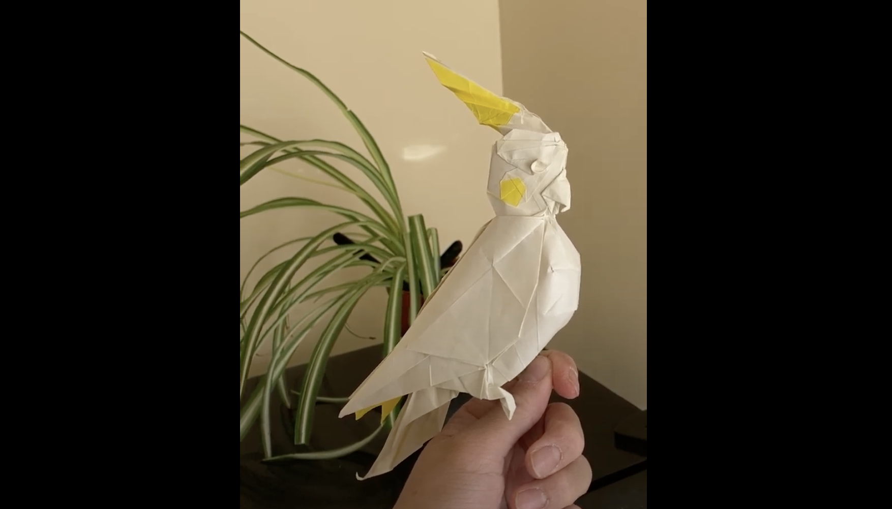

Back to portfolio
Cockatiel

Designed and folded August 2023
Paper: 35cm kami
Designed while in Japan, after participating in a "15 minute design challenge" with University of Tokyo's "Orist" origami club. The design changed so much as to be almost irrecognizable from the original 15 minute design, but that's where it started from.


The right crease pattern is the fully shaped base--the left is the same but with less shaping for clarity. I also sketched out some diagrams for the first few steps--keep an eye out for the full diagrams, hopefully published somewhere at some point.